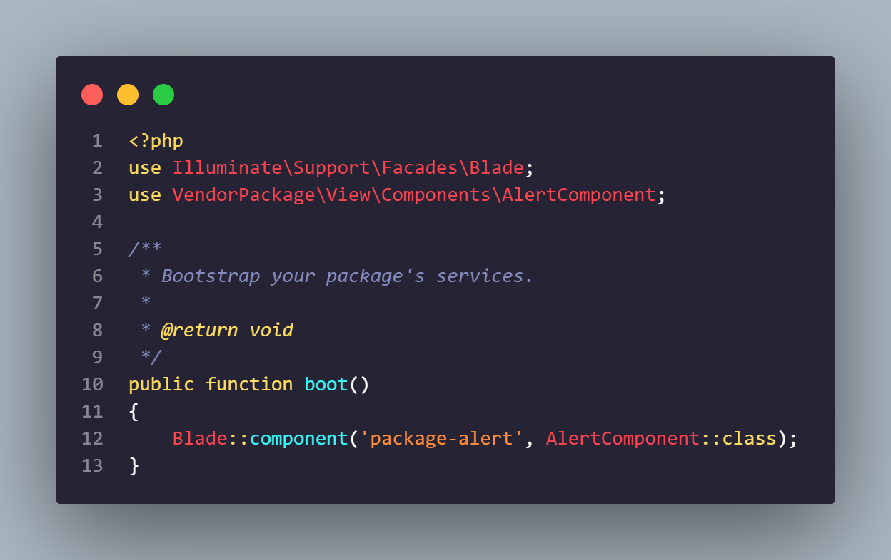

Blade Template
Introduction
Blade adalah mesin templating sederhana namun kuat yang disertakan dengan Laravel. Tidak seperti beberapa mesin templating PHP, Blade tidak membatasi Anda untuk menggunakan kode PHP biasa di templat Anda. Faktanya, semua template Blade dikompilasi ke dalam kode PHP biasa dan di-cache sampai dimodifikasi, yang berarti Blade pada dasarnya menambahkan nol overhead ke aplikasi Anda. File template blade menggunakan ekstensi file .blade.php dan biasanya disimpan di direktori resources/views.
Tampilan blade dapat dikembalikan dari rute atau pengontrol menggunakan bantuan tampilan global. Tentu saja, seperti yang disebutkan dalam dokumentasi tentang tampilan, data dapat diteruskan ke tampilan Blade menggunakan argumen kedua pembantu tampilan.
Semua file konfigurasi untuk framework Laravel disimpan di direktori config. Setiap opsi didokumentasikan, jadi jangan ragu untuk melihat-lihat file dan membiasakan diri dengan opsi yang tersedia untuk Anda
File konfigurasi ini memungkinkan Anda untuk mengonfigurasi hal-hal seperti informasi koneksi database, informasi server email, serta berbagai nilai konfigurasi inti lainnya seperti zona waktu aplikasi dan kunci enkripsi
HTML Entity Encoding
Secara default, Blade (dan Laravel e helper) akan menggandakan encode entitas HTML. Jika Anda ingin menonaktifkan penyandian ganda, panggil metode Blade::withoutDoubleEncoding dari metode boot AppServiceProvider Anda:
Menampilkan Data yang Tidak Terhapus Secara default, pernyataan Blade {{}} secara otomatis dikirim melalui fungsi htmlspecialchars PHP untuk mencegah serangan XSS. Jika Anda tidak ingin data Anda di-escape, Anda dapat menggunakan sintaks berikut:
Blade & Javascript Framework
Karena banyak kerangka kerja JavaScript juga menggunakan kurung kurawal untuk menunjukkan ekspresi yang diberikan harus ditampilkan di browser, Anda dapat menggunakan simbol @ untuk memberi tahu mesin rendering Blade bahwa ekspresi harus tetap tidak tersentuh. Sebagai contoh:
Dalam contoh ini, simbol @ akan dihapus oleh Blade; namun, ekspresi {{ name }} akan tetap tidak tersentuh oleh mesin Blade, memungkinkannya dirender oleh kerangka kerja JavaScript Anda
Simbol @ juga dapat digunakan untuk menghindari arahan Blade:
Blade Directive
Selain pewarisan template dan tampilan data, Blade juga menyediakan pintasan yang nyaman untuk struktur kontrol PHP umum, seperti pernyataan bersyarat dan loop. Pintasan ini menyediakan cara yang sangat bersih dan singkat untuk bekerja dengan struktur kontrol PHP sementara juga tetap akrab dengan rekan PHP mereka.
If Statements
Anda dapat membuat pernyataan if menggunakan direktif @if, @elseif, @else, dan @endif. Arahan ini berfungsi identik dengan rekan-rekan PHP mereka:
Switch Statement
Pernyataan sakelar dapat dibuat menggunakan direktif @switch, @case, @break, @default dan @endswitch
Loops
Blade menyediakan directive perulangan selayaknya syntax PHP, looping dalam blade bisa menggunakan for i, for each, dan while.
1. Contoh penggunaan For i pada blade
Hasil output pada website akan seperti ini
2. Contoh penggunaan for each pada blade
Membuat data pada file web.php
Menampilkan data menggunakan foreach pada folder views
Hasil output pada website akan seperti ini
3. For Else, digunakan untuk mengecek apakah data yang dilooping tersedia atau kosong, contoh penggunaan for else pada blade adalah sebagai berikut
Mengosongkan data pada web.php
Menggunakan for else dalam looping data
Hasil output pada website akan seperti ini
4. Continue, berfungsi sebagai seleksi kondisi pada sebuah looping data, ketika kondisi bernilai true, maka data yang ditampilkan adalah data selanjutnya, contoh penggunaan continue pada blade adalah sebagai berikut

Berdasarkan kode di atas, maka data dengan nama "Farid Efendi" tidak ditampilkan langsung dilanjutkan Menampilkan data yang lain
Variable Loop
Blade juga menyediakan variabel loop yang berfungsi untuk memberikan informasi data looping seperti mendapatkan index, menampilkan index, menghitung data, dll. Variabel loop ada beberapa macam, yaitu index, iteration, remaining, count, first, last, even, odd, depth, parent. Berikut merupakan contoh penggunaan variabel loop:
Pada syntax di atas, kami menggunakan contoh penggunaan $loop->iteration yang berfungsi untuk mendapatkan urutan index yang diawali dari angka 1, dan penggunaan syntax $loop->count untuk mendapatkan total keseluruhan data. Hasil output pada website akan seperti ini
Conditional Classes
Blade menyediakan directive class yang berfungsi untuk menambahkan css berdasarkan index array yang ingin ditambahkan stylenya. Berikut ini merupakan contoh penggunaan Conditional class pada blade.
Pada syntax di atas, kami menambahkan class baru untuk index pertama pada datayang telah dilooping, style yang diberikan berupa warna text yaitu biru.
Additional Attribute
Blade menyediakan atribut tambahan directive yang berfungsi untuk beberapa macam kebutuhan, seperti menyimpan data yang dipilih user, enable-disable button, edit-readonly data, dll. Contoh atribut yang disediakan blade seperti, checked, selected, disabled, required, readonly. Berikut merupakan salah satu contoh penggunaan additional attribute pada blade:
Pada syntax di atas, penggunaan disabled pada button berfungsi untuk menonaktifkan button pada kondisi true. Sehingga user tidak dapat mengeklik tombol submit jika data yang diisikan masih kosong. Berikut merupakan output perbedaan antara button dengan attribut disabled dan tidak disabled
Including Subviews
Including subviews merupakan directive yang disediakan blade untuk mengambil tampilan dari file blade lain. Contoh penggunaan including subviews seperti berikut.
Membuat components navbar dan footer
Berdasarkan syntax yang telah dibuat di atas, maka output pada website adalah seperti ini:
Rendering Views For Collection
Argumen pertama @each directive adalah tampilan yang akan dirender untuk setiap elemen dalam array atau koleksi. Argumen kedua adalah larik atau koleksi yang ingin Anda ulangi, sedangkan argumen ketiga adalah nama variabel yang akan ditetapkan ke iterasi saat ini dalam tampilan. Jadi, misalnya, jika Anda mengulangi array pekerjaan, biasanya Anda ingin mengakses setiap pekerjaan sebagai variabel pekerjaan dalam tampilan. Kunci array untuk iterasi saat ini akan tersedia sebagai variabel kunci dalam tampilan.
Output yang ditampilkan pada website

RAW PHP
Dalam blade, syntax tag php dapat diganti menjadi sebuah directive @php. Contoh penggunaan seperti berikut
Comments
Blade memungkinkan anda untuk menentukan komentar dalam pandangan anda. Namun, berbeda dengan komentar pada HTML, komentar blade tidak disertakan dalam HTML yang dikembalikan oleh aplikasi anda:
{{-- This comment will not be present in the rendered HTML --}}
Components
Komponen dan slot memberikan manfaat yang serupa dengan sections, layouts, dan includes. Namun, beberapa orang mungkin menganggap model komponen dan slot lebih mudah dipahami. Untuk menulis komponen, terdapat dua pendekatan, yaitu komponen berbasis kelas dan komponen anonim.
Komponen Berbasis Kelas
untuk menggunakan pendekatan ini anda dapat menggunakan perintah make:component artisan. Untuk mengilustrasikan cara menggunakan komponen, kita akan membuat komponen Alert sederhana. Maka, perintah make:component akan menaruh komponen tersebut pada direktori app/View/Components.
php artisan make:component Alert
Perintah make:component juga akan membuat tampilan untuk komponen tersebut. Tampilan akan ditempatkan di direktori resources/views/components. Saat menulis komponen untuk aplikasi anda sendiri, komponen secara otomatis ditemukan dalam direktori app/View/Components dan direktori resources/views/components, jadi biasanya tidak diperlukan registrasi komponen lebih lanjut.
Anda juga dapat membuat komponen di dalam sub direktori berikut:
php artisan make:component forms.input --view
Perintah di atas akan membuat komponen Input di direktori app/View/Components/FormS dan tampilan akan ditempatkan di direktori resources/views/components.forms.
Komponen Anonim
Jika anda ingin membuat komponen anonim (komponen dengan hanya template Blade dan tanpa kelas). Anda dapat menggunakan --view flag saat menjalankan perintah make:component:
php artisan make:component forms.input --view
Perintah di atas akan membuat file Blade di
resources/views/components.forms/input.blade.php yang dapat di render
sebagai komponen melalui
Rendering Cmponents
Untuk menampilkan komponen dapat menggunakan tag komponen Blade dalam salah satu template Blade. Tag komponen blade dimulai dengan string x- diikuti dengan Kebab Case dari kelas komponen :
<x-alert/>
<x-user-profile/>
Jika kelas komponen bersarang lebih dalam di dalam direktori app/View/Components, anda dapat menggunakan karakter untuk menunjukan direktori bersarang. Misalnya, jika kita mengasumsikan sebuah komponen terletak di app/View/Components/Inputs/Button.php, kita dapat merendernya seperti ini
<x-inputs.button/>
Passing Data To Components
Anda dapat meneruskan data ke komponen blade menggunakan atribut HTML. Hard-coded, nilai primitif dapat diteruskan ke komponen menggunakan string atribut HTML sederhana. Ekspresi dan variabel PHP harus diteruskan ke komponen melalui atribut yang menggunakan karakter sebagai awalan :
< x-alert type="error" :message="$message"/ >
Anda harus mendefinisikan semua atribut data komponen dalam konstruktor kelasnya. Semua properti publik pada komponen akan secara otomatis tersedia untuk tampilan komponen. Tidak perlu meneruskan data ke tampilan dari metode render. Saat komponen anda dirender, anda dapat menampilkan konten variabel publik komponen anda dengan menggunakan variabel berdasarkan nama :
Component Attributes
Kami telah memeriksa cara meneruskan atribut data ke komponen; namun, terkadang Anda mungkin perlu menentukan atribut HTML tambahan, seperti class, yang bukan merupakan bagian dari data yang diperlukan agar komponen berfungsi. Biasanya, Anda ingin meneruskan atribut tambahan ini ke elemen root template komponen. Misalnya, bayangkan kita ingin merender komponen alert seperti ini:
< x-alert type="error" :message="$message" class="mt-4"/ >
Semua atribut yang bukan bagian dari konstruktor komponen akan secara otomatis ditambahkan ke "tas atribut" komponen. Tas atribut ini secara otomatis tersedia untuk komponen melalui variabel $attributes. Semua atribut dapat dirender dalam komponen dengan menggunakan variabel ini:
Reserved Keywords
Secara default, beberapa kata kunci dicadangkan untuk penggunaan internal Blade untuk merender komponen. Kata kunci berikut tidak dapat didefinisikan sebagai properti publik atau nama metode dalam komponen Anda:
- 1. data
- 2. render
- 3. resolveView
- 4. shouldRender
- 5. View
- 6. withAttributes
- 7. withName
Slots
Anda akan sering diharuskan untuk meneruskan konten tambahan ke komponen anda melalui slot. Slot komponen dirender dengan memanggil variabel $slot. Untuk menjelajahi konsep ini, mari kita bayangkan bahwa komponen alert memiliki markup berikut:
Kita dapat meneruskan konten ke slot dengan memasukan konten ke dalam komponen:
Terkadang komponen mungkin perlu membuat beberapa slot berbeda di lokasi berbeda di dalam komponen. Mari kita ubah komponen alert kita untuk memungkinkan untuk memasukan slot “judul” :
Anda dapat menentukan konten slot bernama menggunakan tag x-slot. Konten apa pun yang tidak berada dalam tag x-slot eksplisit akan diteruskan ke komponen dalam variabel $slot:
Inline Component Views
Untuk komponen yang sangat kecil, mungkin terasa rumit untuk mengelola kelas komponen dan template komponen view. Untuk alasan ini, Kita bisa return markup komponen langsung dari render method:
Generating Inline View Components
Untuk membuat komponen yang merender inline view, kita dapat menggunakan opsi inline saat menjalankan perintah make:component
Dynamic Components
Terkadang kita mungkin perlu merender komponen tetapi tidak tahu komponen mana yang harus dirender sampai runtime. Dalam situasi ini, kita dapat menggunakan komponen bawaan Laravel yakni dynamic-component untuk merender komponen berdasarkan nilai runtime atau variable
Manually Registering Components
Saat menulis komponen untuk aplikasi kita sendiri, komponen secara otomatis ditemukan dalam direktori app/View/Components dan direktori resources/views/components. Namun, jika kita membuat package yang menggunakan komponen Blade atau menempatkan komponen di direktori non-konvensional, kita perlu meregister atau mendaftarkan kelas komponen dan alias tag HTML-nya secara manual sehingga Laravel tahu di mana tempat menemukan komponen tersebut. Kita biasanya harus meregister atau mendaftarkan komponen kita dalam boot method dari penyedia layanan package kita
Setelah komponen kita terdaftar, komponen tersebut dapat dirender menggunakan alias tag-nya:
Autoloading Package Components
Atau, kita dapat menggunakan componentNamespace method untuk memuat kelas komponen secara otomatis berdasarkan konvensi. Misalnya, package Nightshade mungkin memiliki komponen Calendar dan ColorPicker yang berada dalam namespace Package\Views\Components
Ini akan memungkinkan penggunaan package komponen oleh vendor namespace mereka menggunakan syntax package-name::
Blade akan secara otomatis mendeteksi kelas yang dihubungkan ke komponen ini dengan pascal-casing nama komponen. Subdirektori juga didukung menggunakan notasi "dot".
Anonymous Components
Mirip dengan komponen inline, komponen anonymous menyediakan mekanisme untuk mengelola komponen melalui satu file. Namun, komponen anonymous menggunakan satu view file dan tidak memiliki kelas yang terkait. Untuk mendefinisikan komponen anonymous, kita hanya perlu menempatkan template Blade di dalam direktori resources/views/components. Misalnya, dengan asumsi kita telah mendefinisikan sebuah komponen di resources/views/components/alert.blade.php, kita cukup merendernya seperti ini:
Kita dapat menggunakan karakter [.] untuk menunjukkan jika komponen berada lebih dalam di dalam direktori components. Misalnya, dengan asumsi komponen didefinisikan di resources/views/components/inputs/button.blade.php, kita dapat merendernya seperti ini:
Anonymous Index Components
Terkadang, ketika sebuah komponen terdiri dari banyak template Blade, kita mungkin ingin mengelompokkan template komponen yang diberikan dalam satu direktori. Misalnya, bayangkan komponen "accordion" dengan struktur direktori berikut:
/resources/views/components/accordion.blade.php
/resources/views/components/accordion/item.blade.php
Struktur direktori ini memungkinkan kita untuk merender komponen accordion dan itemnya seperti:
Namun, untuk merender komponen accordion melalui x-accordion, kita terpaksa menempatkan “index” template komponen accordion di direktori resources/views/components daripada menumpuknya di dalam direktori accordion dengan template terkait accordion lainnya.
Untungnya, Blade memungkinkan kita untuk menempatkan file index.blade.php di dalam direktori template komponen. Ketika template index.blade.php ada untuk komponen, itu akan dirender sebagai node "root" dari komponen. Jadi, kita dapat terus menggunakan syntax Blade yang sama seperti yang diberikan pada contoh di atas; namun, kita akan menyesuaikan struktur direktori kita seperti ini:
/resources/views/components/accordion/index.blade.php
/resources/views/components/accordion/item.blade.php
Data Properties/Attributes
Karena komponen anonymous tidak memiliki kelas terkait, kita mungkin bertanya-tanya bagaimana kita dapat membedakan data mana yang harus diteruskan ke komponen sebagai variabel dan atribut mana yang harus ditempatkan di komponen attribute bag.
Kita mungkin bisa menentukan atribut mana yang harus dianggap sebagai variable data menggunakan arahan @props di bagian atas komponen template Blade kita. Semua atribut lain pada komponen akan tersedia melalui komponen attribute bag. Jika kita ingin memberikan nilai default pada variabel data, kita dapat menentukan nama variabel sebagai kunci array dan nilai default sebagai nilai array:
Dengan definisi komponen di atas, kita dapat merender komponen seperti ini:
Accesing Parent Data
Terkadang kita mungkin ingin mengakses data dari komponen induk di dalam komponen turunan. Dalam kasus ini, kita dapat menggunakan arahan @aware. Misalnya, bayangkan kita sedang membangun komponen menu kompleks yang terdiri dari <x-menu> sebagai induk dan <x-menu.item> sebagai turunan:
Komponen <x-menu> mungkin memiliki implementasi seperti berikut:
Karena prop color hanya diteruskan ke induk (<x-menu>), itu tidak akan tersedia di dalam <x-menu.item>. Namun, jika kita menggunakan arahan @aware, kita juga dapat membuatnya tersedia di dalam <x-menu.item>:
Dengan catatan : Arahan @aware tidak dapat mengakses data induk yang tidak secara eksplisit diteruskan ke komponen induk melalui atribut HTML. Nilai default @props yang tidak secara eksplisit diteruskan ke komponen induk tidak dapat diakses oleh arahan @aware.
Anonymous Components Namespaces
Mirip dengan komponen inline, komponen anonim menyediakan mekanisme untuk mengelola komponen dengan satu file. Namun, komponen anonim menggunakan file tampilan tunggal dan tidak memiliki kelas terkait. Untuk menentukan komponen anonim, cukup tempatkan template blade Anda di direktori resources/views/components. Anda cukup merendernya seperti ini:
Anda dapat menggunakan . Karakter yang menunjukkan apakah komponen lebih bersarang dalam direktori komponen. Misalnya, dengan asumsi komponen Anda didefinisikan di resources/views/components/inputs/button.blade.php Anda dapat merendernya seperti ini:
Anonymous Index Components
Terkadang, jika komponen terdiri dari beberapa template Blade, Anda mungkin ingin mengelompokkan template komponen tertentu ke dalam satu direktori. Misalnya, bayangkan komponen "akordeon" dengan struktur direktori berikut:
Struktur direktori ini mendukung Anda untuk merender komponen akordeon dan itemnya seperti:
Namun, untuk merender komponen akordeon dengan x-accordion, kita perlu menempatkan templat komponen akordeon "indeks" di direktori resources/views/components alih-alih menumpuknya di dalam direktori akordeon dengan templat terkait akordeon lainnya.
Untungnya, Blade memungkinkan Anda untuk menempatkan file index.blade.php di direktori template komponen. Jika sebuah komponen memiliki template index.blade.php, itu akan dirender sebagai simpul "root" dari komponen tersebut. Jadi kita dapat terus menggunakan sintaks Blade yang sama seperti pada contoh di atas; namun, kami mengubah struktur direktori kami sebagai berikut:
Data Properties/Attributes
Komponen anonim tidak memiliki kelas terkait, jadi Anda mungkin bertanya-tanya bagaimana cara membedakan data mana yang harus diteruskan ke komponen sebagai variabel dan atribut mana yang harus ditempatkan di tas atribut komponen. Anda dapat menentukan atribut mana yang dianggap sebagai variabel data menggunakan arahan @props di bagian atas template Blade komponen anda. Semua atribut lain pada komponen akan tersedia melalui tas atribut komponen. Jika anda ingin memberikan nilai default pada variabel data, anda bisa menentukan nama variabel sebagai kunci array dan nilai default sebagai nilai array:
Mengingat definisi komponen di atas, kami dapat membuat komponen seperti ini:
Accessing Parent Data
Terkadang Anda ingin mengakses data dari komponen induk di dalam komponen turunan. Dalam hal ini Anda dapat menggunakan arahan @aware. Misalnya, Anda membuat komponen menu kompleks yang terdiri dari
Karena prop warna hanya diteruskan ke induk (<x-menu>), itu tidak akan tersedia di dalam <x-menu.item>. Namun, itu juga dapat tersedia di dalam <x-menu.item> menggunakan direktif @aware:
Arahan @aware tidak dapat mengakses data induk yang tidak secara eksplisit diteruskan ke komponen induk melalui atribut HTML. Nilai default untuk @props yang tidak secara eksplisit diteruskan ke komponen induk tidak dapat diakses oleh direktif @aware.
Anonymous Components Namespaces
Seperti disebutkan sebelumnya, komponen anonim biasanya ditentukan dengan menempatkan template Blade di direktori resources/views/components. Namun, anda mungkin ingin mendaftarkan jalur komponen anonim lainnya dengan Laravel selain jalur default.
Misalnya, jika Anda membuat aplikasi pemesanan liburan, Anda dapat menempatkan komponen anonim yang terkait dengan pemesanan penerbangan di direktori resource/views/flights/books/components. Untuk memberi tahu Laravel di mana lokasi komponen anonim ini, Anda dapat menggunakan metode anonymousComponentNamespace yang disediakan oleh fasad Blade.
Metode anonymousComponentNamespace menerima "jalur" ke lokasi komponen anonim sebagai argumen pertama, dan "namespace" di mana komponen harus ditempatkan sebagai argumen kedua. Seperti yang Anda lihat pada contoh di bawah, "namespace" dimulai dengan nama komponen saat komponen dirender. Biasanya, metode ini harus dipanggil dari metode boot salah satu penyedia layanan aplikasi anda:
Dengan contoh di atas, Anda dapat merender komponen panel yang ada di dalam direktori komponen yang baru didaftarkan seperti:
Building Layouts
Layouts Using Components
Sebagian besar aplikasi web mempertahankan tata letak umum yang sama di beberapa halaman. Akan sangat merepotkan dan sulit untuk memelihara aplikasi jika saya harus membangun kembali seluruh tata letak HTML untuk setiap tampilan yang saya buat. Untungnya, lebih mudah untuk mendefinisikan tata letak ini sebagai satu Blade Component lalu menggunakannya di seluruh aplikasi anda.
1. Defining The Layout Components
Sebagai contoh bayangkan kita sedang membuat aplikasi to do list. Kita mungkin akan mendefinisikan tata letak yang terihat seperti berikut:
2. Applying The Layout Component
Setelah mendefinisikan tata letak, kita akan membuat tampilan Blade yang akan menggunakan komponen tersebut. Dalam contoh ini, kita akan mendefinisikan tampilan sederhana yang menampilkan daftar tugas kita:
Ingat, konten yang dimasukkan ke dalam komponen akan diberikan ke variabel $slot default di dalam komponen layout kita. Seperti yang telah anda sadari, tata letak kami juga mengikuti slot $title jika tersedia; jika tidak, judul default akan ditampilkan. Kita juga bisa memasukkan custom title dari tampilan daftar tugas kita dengan menggunakan standard slot syntax yang dibahas dalam dokumentasi component:
Sekarang setelah kita mendefinisikan tampilan tata letak dan daftar tugas, kita hanya perlu mengembalikan tampilan tugas dari rute:
Layout Using Template Inheritance
1. Defining A Layout
Layouts juga dapat dibuat melalui ”template inheritance”. Ini adalah cara utama membangun aplikasi sebelum pengenalan komponen.
2.Exteding A Layout
Saat mendefinisikan tampilan anak, gunakan perintah @extends Blade untuk menentukan tata letak mana yang harus "diwarisi” atau “inherit" oleh tampilan anak. Tampilan yang memperluas tata letak Blade dapat menyuntikkan konten ke bagian tata letak menggunakan arahan @section.
Forms
CSRF Field
Setiap kali Anda mendefinisikan formulir HTML di aplikasi anda, anda harus menambahkan bidang token CSRF tersembunyi ke formulir sehingga middleware perlindungan CSRF dapat memvalidasi permintaan. Anda dapat menggunakan arahan @csrf Blade untuk menjalankan token field.
Method Field
Semenjak HTML forms tidak dapat membuat permintaan PUT, PATCH, atau DELETE, anda perlu menambahkan hidden_method fields untuk menipu kata kerja HTTP ini. @method Blade akan mengarahkan anda untuk membuat fields ini:
Validation Errors
Gunakan direktif @error untuk melihat pesan kesalahan validasi dengan cepat untuk atribut tertentu. Direktif @error dapat menggemakan variabel $message untuk menampilkan pesan kesalahan:
Arahan @error mengkompilasi ke pernyataan "jika", jadi jika atribut tidak memiliki kesalahan, arahan @else dapat digunakan untuk merender konten:
Anda mungkin dapat meneruskan nama kantong kesalahan tertentu sebagai parameter kedua ke @error directive untuk mengambil pesan kesalahan validasi pada halaman yang berisi beberapa formulir: